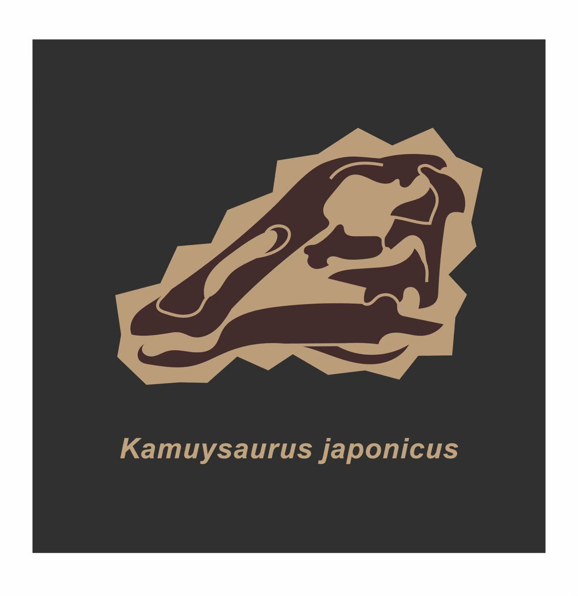
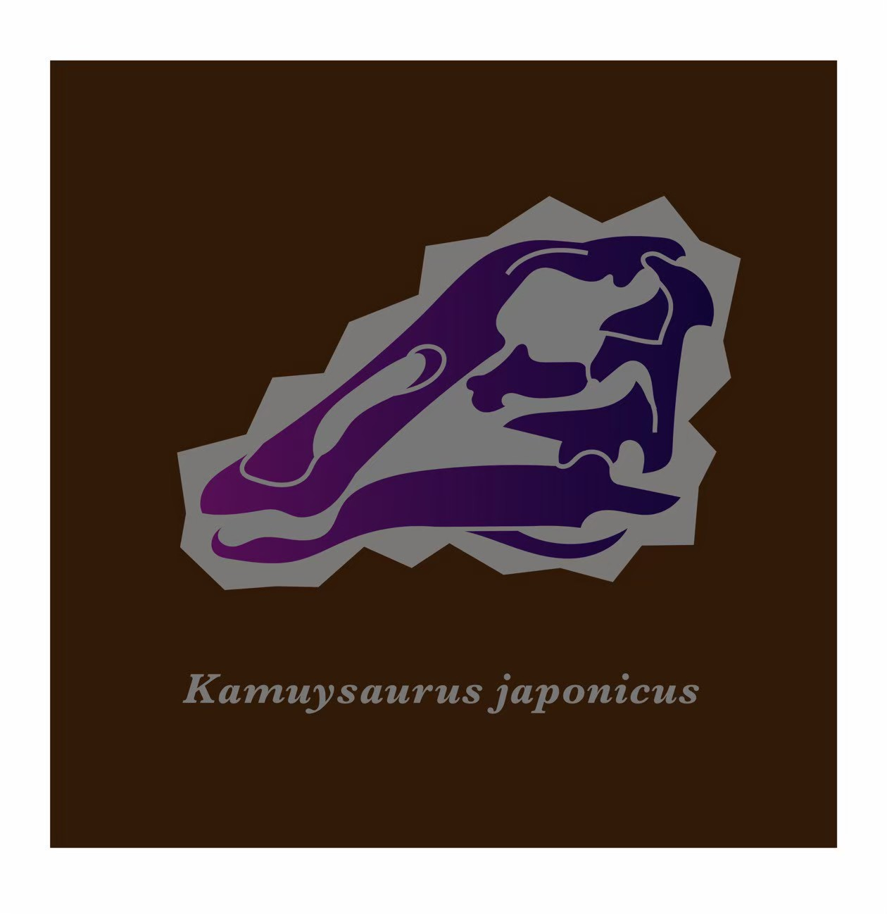
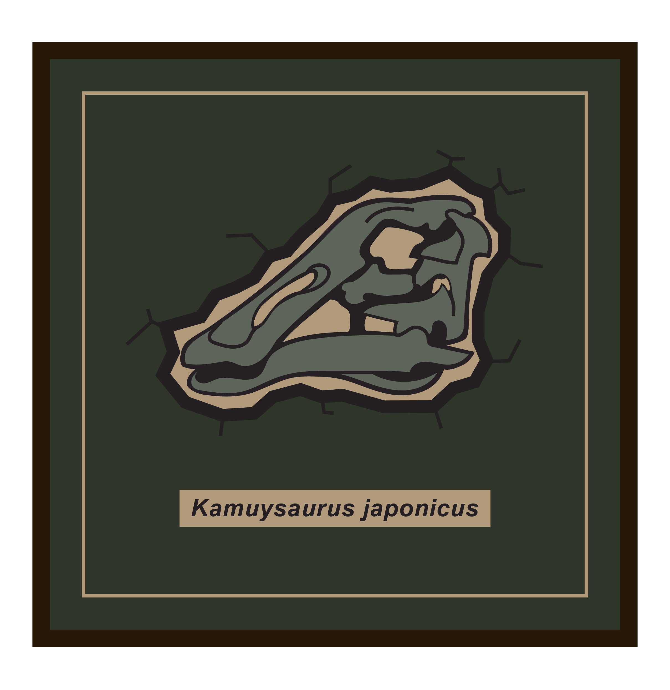
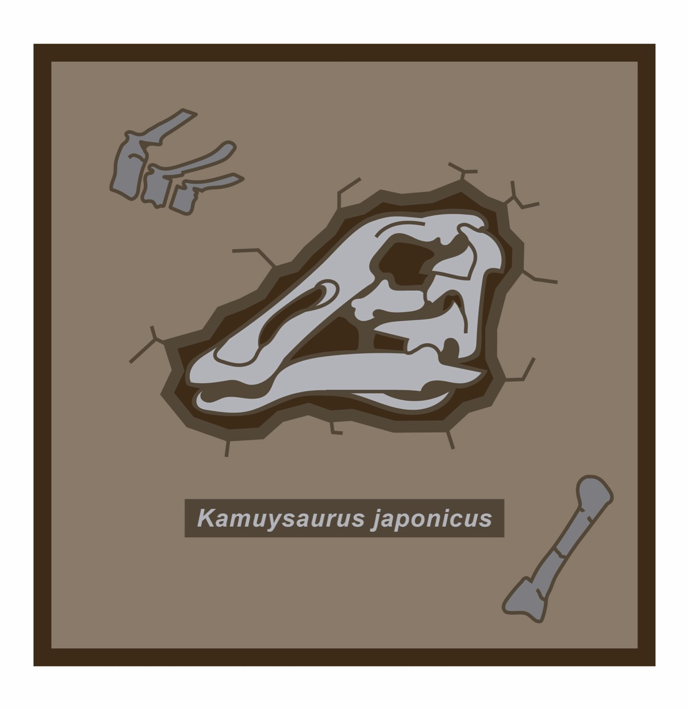

Kamuysaurus japonicus
北海道で発見された恐竜
カムイサウルスは北海道むかわ町で発見された恐竜です。 2013年から2014年にかけて本格的な発掘が行われ、2019年に新属新種の恐竜として報告されました。
カムイサウルスはハドロサウルス科というグループに属します。 また、当博物館で展示されているニッポノサウルスもこのグループに属します。
※細かい解説は下のpdfファイルから閲覧できます。 また、ダウンロード＆印刷もできますので、必要に応じてお使いください。
※コースターと同じデザインの画像を下からダウンロード可能です。 携帯電話やパソコンなどの壁紙としてお使いください。
※画像が読み込めない、または出てこない場合、Windowsでは「Ctrl + F5」（Macでは 「Command + R」）を同時に押してみてください。
※携帯電話の場合は更新ボタンを押すことをお試しください。
※それでも改善されない場合は、キャッシュをクリアしてください。（Googleの場合：Windows：Ctrl + Shift + Delete、Mac：command + shift + deleteで消去ができます。）
制作
2025年度 北海道大学大学院 理学院専門科目・大学院共通科目 博物館コミュニケーション特論 北大生企画グッズ
購入者さま限定コンテンツ
試作デザイン展示館 ～Backyard Of Hokudai Museum～
ここでは、特典としてコースターを作るうえで、いくつか生み出したデザイン案がありましたので、それらをここに設置します。
お気に入りの画像がありましたら、上の画像と同様にダウンロードもできますので、壁紙などにお使いください。

プロトタイプ2-01「1期試作品(白黒バージョン)」
初期試作品の1つです。
これは、イラストのみが描かれたものになっております。
配色は背景が黒、アンモナイト部分は白色で構成された落ち着きのあるデザインです。
{kind=link}

プロトタイプ2-02「1期試作品(グレー＆金色バージョン1)」
初期試作品の1つです。
これは、イラストのみが描かれたものになっております。
プロトタイプ1-01とデザインは一緒ですが、配色は背景がグレー、アンモナイト部分は金色で構成されたすこし高級感のあるデザインです。

プロトタイプ2-03「1期試作品(グレー＆金色バージョン2)」
初期試作品の1つであります。
こちらも、イラストのみが描かれたものになっております。
配色はプロトタイプ1-02と同じですが、アンモナイトの模様が若干うねりが加えられているデザインになっています。
{kind=link}

プロトタイプ2-04「2期試作品(ライトバージョン)」
プロトタイプ1-01~プロトタイプ1-03を改良したものです。
2期の段階では、アンモナイトのイラストに学名を加えたレイアウトとなっております。
土から発掘している最中を表現しているデザインに仕上がっています。
{kind=link}

プロトタイプ2-05「2期試作品(ダークバージョン)」
こちらもプロトタイプ1-01~プロトタイプ1-03を改良したものです。
プロトタイプ1-04と同じく、アンモナイトのイラストに学名を加えたレイアウトとなっておりますが、学名の字体が筆記体に少しよせたものになっています。
背景は1-04と対照的にダークですが、アンモナイトの中身をグラデーションデザインにしたものになっています。

プロトタイプ2-06「3期試作品(薄い茶色・白色バージョン)」
今回のコースターの絵柄にほぼ近いデザインです。
2期に比べて、背景にさらにミニイラストを加えることで、実際に化石発掘を体験しているようなデザインを狙いました。
2期までとは異なり、学名の部分を枠で囲んでわかりやすいようにしました。

プロトタイプ2-07「3期試作品(濃いグレーバージョン1)」
プロトタイプ1-06と同時期に作られたものです。
こちらは、アンモナイトのデザインの外側に枠線を加えています。
枠線の形がプロトタイプ1-08に比べて、一見いびつな形に見えますが、実はこの形は、北大総合博物館の外観を各辺1つずつ並べているのです！
また、1-05と同じようにアンモナイトの部分にグラデーションを入れておしゃれに仕上げたデザイン案となります。

プロトタイプ2-08「3期試作品(濃いグレーバージョン2)」
直前の2つと同じ時期に考案されたものです。
1-07と同じく、配色は背景が濃いグレーですが、アンモナイト部分は白色、枠線はきれいな正方形で仕上げています。
こちらは"simple is best"なデザインです。

プロトタイプ2-09「3期試作品(濃いグレーバージョン2)」
直前の2つと同じ時期に考案されたものです。
1-07と同じく、配色は背景が濃いグレーですが、アンモナイト部分は白色、枠線はきれいな正方形で仕上げています。
こちらは"simple is best"なデザインです。
{kind=link}